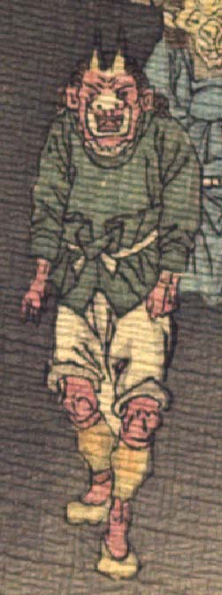

赤い肌の鬼。額に2本角が生えている。額に皺が寄り、鼻は横に潰れて、目は小さい。耳は尖り、口は大きく、顔つきは獣のようである。異国風の緑色の上着と白い股引、黄色い脚絆を身に着け、黄色い靴のようなものをはいて、歩いている。
著作者：J.Dautremer／出典：親書誌：U426_nichibunken_0123：Le vieillard et les démons／日付：2006／資源識別子：U426_nichibunken_0123_0002_0002
Copyright (c)2010- International Research Center for Japanese Studies, Kyoto, Japan. All rights reserved.